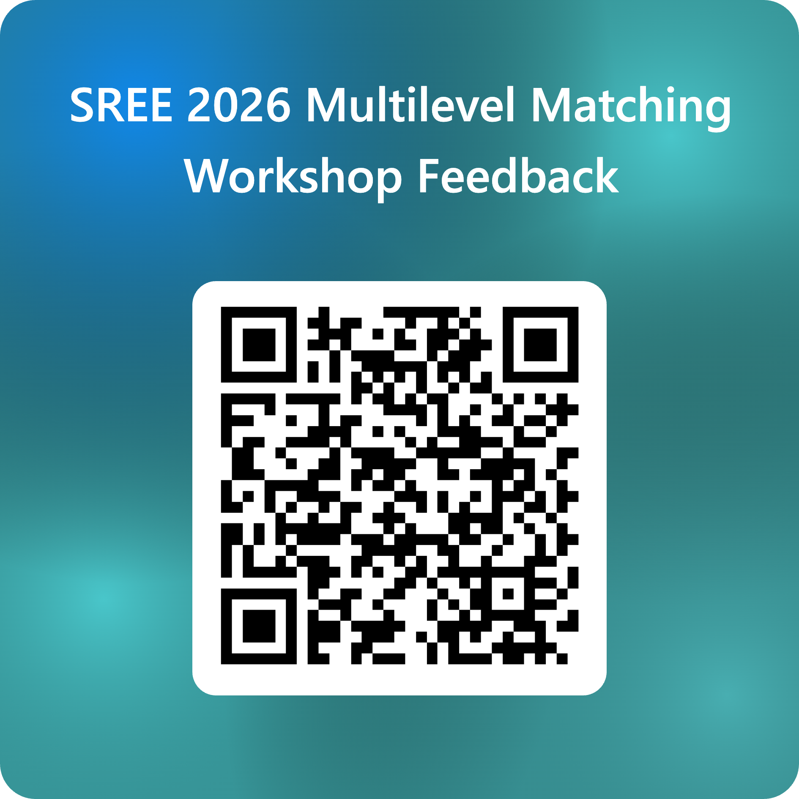

Matching Methods for Multilevel Data in Education Research
A practical guide and illustration of approaches in R
SREE 2026 workshop · Baltimore · Wednesday, September 23, 2026 · Laurel AB, 9:30 a.m. · 2 hours
Instructors: Jordan Rickles (UCLA) and Alberto Guzman-Alvarez (American Institutes for Research)
Repository: https://github.com/alberto-guzman/multilevel-matching-workshop. Download the zip from the Code button, or clone it. The repository holds everything on this site, including the data and the checkpoints.
This site holds the hands-on materials for the workshop. Each chapter page contains the R code from one chapter of the handbook Propensity Score Matching in Multilevel Educational Settings, with the explanatory text removed so that the code runs from top to bottom.
Before the workshop
Do these steps at home, because the wifi in the room may be slow.
- Install R and either RStudio or Positron.
- Download this repository and open it.
- Run
00_install_packages.R, then00_check_setup.R.
The Before you come page has the details for each step.
Schedule
| Time | Activity |
|---|---|
| 9:30 | Foundational concepts, the typology of designs, and the six stages (lecture) |
| 10:20 | Chapter 4, the data and the R packages, and the setup chunk |
| 10:30 | Break. Finish installing if you have not. |
| 10:40 | Chapter 5, the multisite individual assignment design, run together stage by stage |
| 11:21 | Chapter 6, the cluster assignment design, a tour on the projector |
| 11:27 | Close and questions |
How the session runs
Jordan opens with the lecture, which covers the foundational concepts, the typology of multilevel designs, and the six-stage matching workflow. Alberto then shows the data and the packages from Chapter 4 of the handbook.
After the break, we work through two pages.
- Chapter 5. One chunk at a time, with a stop for questions at the end of every stage.
- Chapter 6. A tour on the projector. Alberto runs the main chunks and explains what changes when whole schools are assigned. You run the page at home.
By the end of the session you should be able to do five things.
- State the estimand for a multisite or a cluster design.
- Fit a propensity score that accounts for the sites.
- Run the matching call that fits your design.
- Judge the matched sample at the pooled level and at the site level.
- Estimate the individual-average and the site-average effect.
If a chunk fails during the session
Do not stop. Every stage on the Chapter 5 page from Stage 2 on opens with one line, load("checkpoints/stage_N.RData"), which restores every object from the end of the previous stage. Run it and continue with the room.
The pages
Each page follows the same six stages. First, define the estimand. Second, define the distance measure. Third, implement the matching method. Fourth, assess the matched sample. Fifth, analyze the outcomes. Sixth, run a sensitivity analysis.
| Page | Chapter | What it covers | In the session |
|---|---|---|---|
| MIAD | 5 | Students are assigned to treatment within schools. Eight propensity scores, four matching approaches, balance pooled and within site, individual-average and site-average effects, the FIRC model, and a sensitivity analysis. | We run it together. It ends with a “Try it” block and a template for your own data. |
| CAD | 6 | Whole schools are assigned to treatment. The cluster-level propensity score, cluster-global, sequential, and network-flow matching, balance at two levels, cluster-average and individual-average effects, permutation inference, and a sensitivity analysis. | A tour on the projector after Chapter 5. Run it at home. |
| MCAD | 7 | Teachers are assigned within schools, with students nested in teachers. This design combines the other two. | Reference only. |
| Decision flowcharts | 3 | The guiding questions and the options at each stage, for the MIAD and the CAD. | For your own study, after the session. |
Slides
The Slides page has Jordan’s lecture slides for the first hour as a PDF and Alberto’s short deck for the hands-on portion.
The data
All examples use data/timss_df.rds, the TIMSS 2015 Grade 4 mathematics data for Canada, with 2,478 students nested in teachers, who are nested in schools.
The three treatment indicators were constructed from observed covariates to illustrate the three designs. They are not real interventions, and the estimates on these pages illustrate the workflow rather than report findings. See data/README.md for the variable list and the caveats.
Using the code with your own data
Your data should have one row per individual, with four kinds of columns.
- A 0/1 treatment column.
- A site or cluster identifier.
- The covariates.
- The outcome.
The dataset, the treatment indicator, the site identifier, and the covariate formulas are set near the top of each stage. Replace those objects with your own. The “Your own data” block at the end of the Chapter 5 page lists the five objects to change.
Feedback and testers
Please tell us what worked and what did not, using the form at https://forms.cloud.microsoft/r/XZpKK1aEmY. The form also asks whether you would like to test the handbook before it is finalized.
